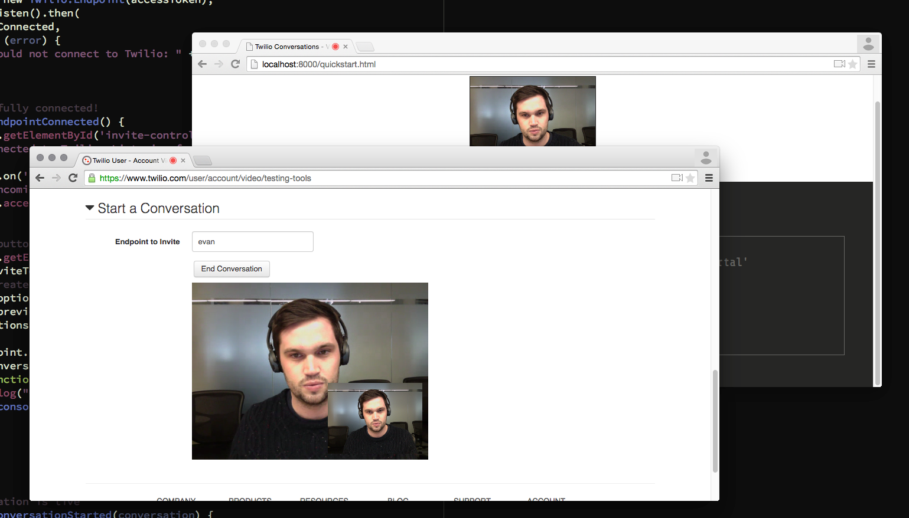

Accept a Conversation Invite
It's time to create our first Conversation. There are two steps involved in the creation of a Conversation. First, one Endpoint sends an Invite to another using Endpoint.createConversation. On the receiving side, the local Endpoint emits an invite event and the receiving application can either accept or reject the incoming Invite. If the Invite is accepted, a Conversation is created.
For our first Conversation, we will send an Invite from the Testing Tools page of the Twilio Account Portal to our Quickstart.
Add the following to code quickstart.js (changes in bold):
// successfully connected!
function endpointConnected() {
document.getElementById('invite-controls').style.display = 'block';
log("Connected to Twilio. Listening for incoming Invites as '" + endpoint.address + "'");
endpoint.on('invite', function (invite) {
log('Incoming invite from: ' + invite.from);
invite.accept().then(conversationStarted);
});
};
// conversation is live
function conversationStarted(conversation) {
log("In an active Conversation");
// draw local video, if not already previewing
if (!previewMedia) {
conversation.localMedia.attach('#local-media');
}
// when a participant joins, draw their video on screen
conversation.on('participantConnected', function (participant) {
log("Participant '" + participant.address + "' connected");
participant.media.attach('#remote-media');
});
// when a participant disconnects, note in log
conversation.on('participantDisconnected', function (participant) {
log("Participant '" + participant.address + "' disconnected");
});
// when the conversation ends, stop capturing local video
conversation.on('ended', function (conversation) {
log("Connected to Twilio. Listening for incoming Invites as '" + endpoint.address + "'");
conversation.localMedia.stop();
conversation.disconnect();
});
};
We've made two major changes here, so let's walk through them:
- We registered a callback on our
Endpoint's 'invite' event. Inside the callback, we automatically accept any incomingInvites. - We created a function called
conversationStarted. This function will be called when ourEndpointsuccessfully connects to aConversation. It registers a series of event handlers to our newConversationobject. These handlers deal with the various events that will occur during aConversation.
Let the Conversation Begin!
With all the pieces in place, it's time to create our first video Conversation.
- Open
quickstart.htmlin your browser, making sure to access it via the web server we set up earlier, e.g.:http://localhost:8000/quickstart.html - In another tab or browser, head back to the Testing Tools page of the Twilio Account Portal.
- Scroll down to the "Start a Conversation" section
- Enter the address of your Quickstart Endpoint. This is the address you provided earlier when generating a demo token.
- Click 'Start Conversation'
- You should be prompted to Allow camera access in both browsers. Click 'Allow' and the Conversation will begin.
